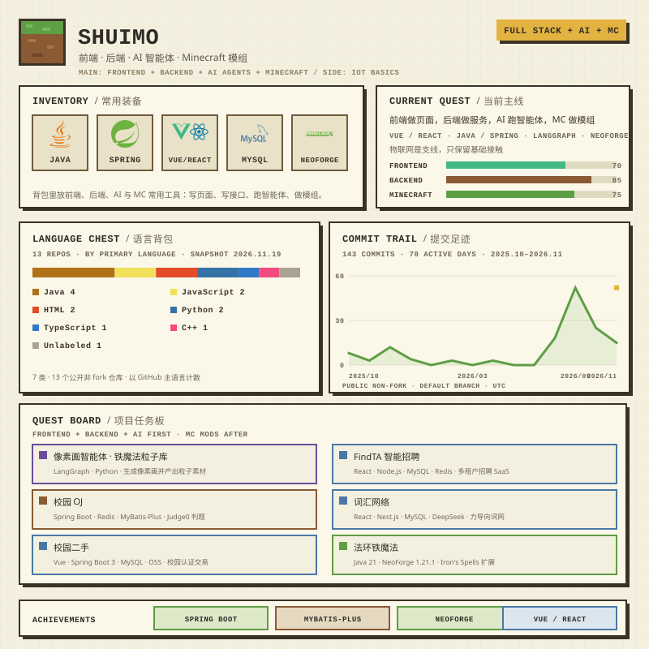
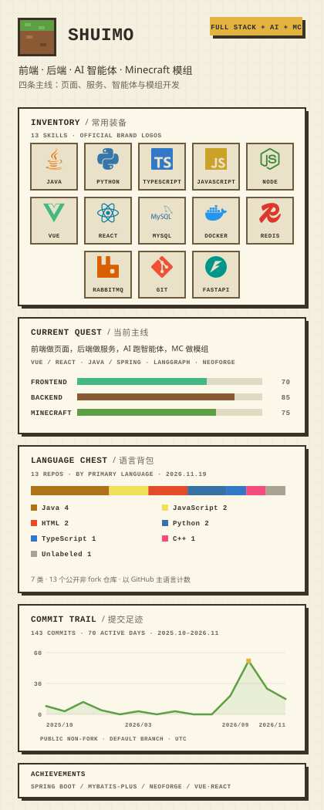

整页已合并为一张 MC 风格画布：装备栏、主线进度、语言背包、提交足迹、项目任务板与成就墙都在同一张图里。项目任务板按前端 / 后端 / AI 优先排列，粒子库已更新为 LangGraph 像素画智能体。桌面端使用 assets/profile-mc.svg，窄屏使用 assets/profile-mc-mobile.svg。
assets/profile-mc.svg
assets/profile-mc-mobile.svg

